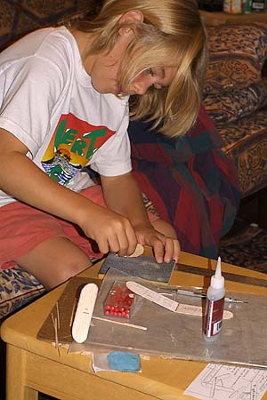
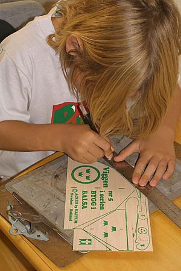
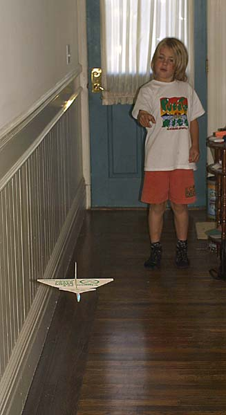

|  |  |
|

Here is my nephew Duncan, and a pair of gliders that he has just finished. I believe that they are the first flying models that he has made himself.
The gliders are all sheet balsa construction and were built from a Swedish kit made by Run Johannson of ACKUS. There are actually 3 models in the kit, but we only had time to build these two. They were completed with very little assistance, and fly remarkably well. The second picture shows a trimming flight in the front hall. For more information, contact or Rune at info@ackus.com or at www.ackus.com. Click here to see his Antoinette stick model. Copyright 2002, Thayer Syme.
| |